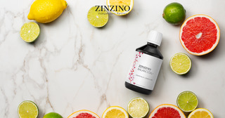
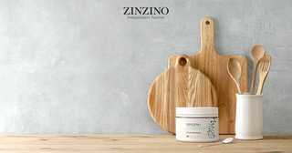
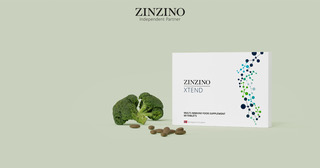
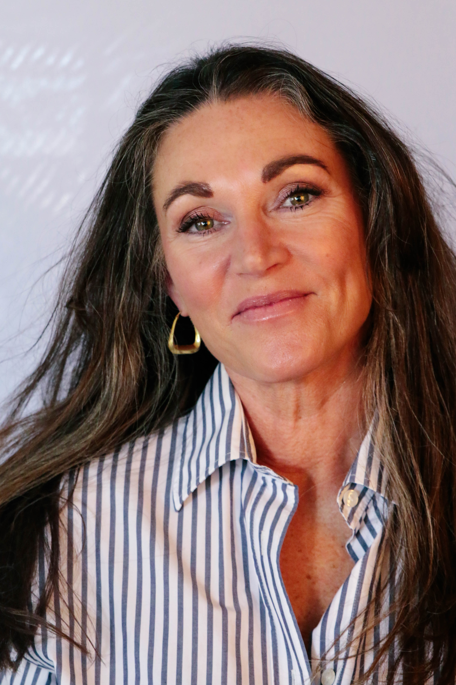

Vitaliteitscoaching & Test-based Nutrition
Waar inzicht in je lichaam begint met meten
ZinSane combineert wetenschappelijk onderbouwde bloedtesten met persoonlijke vitaliteitscoaching. Geen aannames. Alleen wat jouw lichaam echt nodig heeft.
Vitaliteitscoaching & Test-based Nutrition
ZinSane combineert wetenschappelijk onderbouwde bloedtesten met persoonlijke vitaliteitscoaching. Geen aannames. Alleen wat jouw lichaam echt nodig heeft.
Filosofie
"Longevity betekent niet alleen meer jaren aan je leven toevoegen, maar meer leven aan je jaren."
Longevity = langdurige vitaliteit. Bij ZinSane werken we aan gezondheid op celniveau, zodat je lichaam optimaal kan functioneren – vandaag, morgen en over twintig jaar.
Binnen ZinSane gaat longevity over het optimaliseren van je lichaam van binnenuit, zodat je langer vitaal, energiek en mentaal scherp blijft – gebaseerd op wetenschap, metingen en persoonlijke inzichten.
Longevity is de kunst van duurzaam leven. Niet gedreven door snelle oplossingen of hypes, maar door inzicht in wat jouw lichaam werkelijk nodig heeft.
Bij ZinSane geloven we dat echte vitaliteit begint bij meten, begrijpen en gericht verbeteren. Door middel van test-based nutrition en bewuste leefstijlkeuzes ondersteunen we het lichaam op celniveau – zodat gezondheid niet alleen vandaag voelbaar is, maar ook op lange termijn behouden blijft.
Veel mensen slikken supplementen "voor de zekerheid". Maar zonder inzicht weet je eigenlijk niet of ze iets bijdragen.
Met een eenvoudige bloedtest wordt onder andere de omega-6/omega-3 balans in je lichaam bepaald. Deze balans speelt een cruciale rol bij celgezondheid, energie, focus en herstel.
Op basis van jouw persoonlijke testresultaten ontstaat een helder beeld van wat jouw lichaam nodig heeft. Pas daarna volgt een advies over voeding, leefstijl en gerichte supplementen.
ZinSane combineert deze test-based aanpak met persoonlijke vitaliteitscoaching, omdat duurzame gezondheid nooit uit één element bestaat. Voeding, beweging, herstel en mentale balans versterken elkaar.
Een gezond lichaam is het fundament onder alles wat je wilt bereiken.
Aanpak
Van meting naar resultaat — stap voor stap
De ZinSane-methode bestaat uit drie heldere stappen.
Stap 1. Meten.
Stap 2. Herstellen.
Stap 3. Versterken.
Met een eenvoudige thuistestkit brengen we jouw biomarkers in kaart — waaronder de omega-6/omega-3 balans. Geen aannames, geen giswerk. Alleen data die vertelt wat jouw lichaam werkelijk nodig heeft.
Op basis van jouw testresultaten stel ik een persoonlijk plan op: gerichte voeding, supplementen en leefstijlaanpassingen volledig afgestemd op jouw lichaam. Ik begeleid je stap voor stap naar meer energie, beter herstel en mentale scherpte.
Na vier maanden meten we opnieuw. Zwart op wit zie je het verschil. De hermeting bewijst wat jouw lichaam heeft bereikt — en vormt het startpunt voor de volgende stap in jouw vitaliteit.
Vitaliteitscoaching
ZinSane integreert het Vitalogisch model in haar coachingsaanpak. Dit model vormt een solide fundering onder alle coachingsgesprekken. Het zorgt ervoor dat alle aspecten van vitaliteit aan bod komen. Deze holistische benadering is kenmerkend voor de werkwijze van ZinSane.
Het Vitalogisch model is een integraal vitaliteitsmodel dat in één oogopslag laat zien hoe je vitaler kunt leven — en aan welke knop je kunt draaien om dit te bewerkstelligen.
Het model hanteert een holistische benadering van vitaliteit. Vitaliteit bestaat uit het in balans zijn van vijf aspecten: vitalogisch, fysiologisch, psychologisch, ecologisch en filosofisch.
Je vitaal voelen is een goede balans tussen lichaam (fysiologisch), geest (psychologisch), omgeving (ecologisch) en zingeving (filosofisch). Het gaat om het vrijmaken en hervinden van energie — van binnenuit, op basis van inzicht in jezelf.
Het Vitalogisch model is ontwikkeld o.a. op basis van een door de Amerikaanse auteur S. Covey gehanteerde indeling in vier basisbehoeftes (fysiek, sociaal, mentaal en spiritueel), waarbij we een belangrijk element hebben toegevoegd: een logisch denkkader — de noodzaak. Want 'zonder noodzaak geen verandering…'
Stephen Covey signaleert het 'paradigma van de complete mens'. We zijn in de kern vierdimensionale wezens met lichaam, hoofd, hart en ziel. Wie alle westerse en oosterse filosofieën en religies bestudeert, zal steeds dezelfde fysieke, mentale, sociaal-emotionele en spirituele dimensie aantreffen. Ze vertegenwoordigen de vier basisbehoeften van mensen: leven (fysiek), liefhebben (relaties), leren (groei en ontwikkeling) en iets nalaten (bijdragen, ertoe doen). Als we deze behoeften vervullen, komen we in balans met onszelf en kunnen we onze talenten ontplooien en benutten (S. Covey, 2005).

Aanbod
Voor mensen die hun gezondheid serieus nemen
ZinSane Basic
Voor wie inzicht wil krijgen in zijn/haar lichaam en gericht advies wil.
ZinSane Premium
Voor wie zijn energie, herstel en mentale scherpte structureel wil verbeteren.
ZinSane Partner
Voor mensen met een passie voor gezondheid én ondernemerschap.
Ervaringen
Test-based resultaten die je voelt
Na de nulmeting bleek mijn omega-6/3 ratio volledig uit balans. Vier maanden later meet ik 4:1 en voel ik het verschil dagelijks in mijn energie en focus.
Eindelijk concrete inzichten in plaats van vage adviezen. Meten, dan weten — dat is wat ZinSane doet. Mijn slaap is drastisch verbeterd.
De test gaf inzicht in wat ik al jaren voelde maar niet kon verklaren. De aanpak van Sabine is persoonlijk, wetenschappelijk en effectief.
Als sales trainer, -coach en interim sales manager, is mijn werkweek flink gevuld. Sinds ik de Balance Oil via ZinSane gebruik, merk ik dat ik mijn energie beter vasthoud en daardoor goed blijf presteren.

Balance Test & Supplementen
Zinzino's BalanceTest is een eenvoudige zelftest voor het analyseren van de vetzuren in capillair bloed dat uit een vingertop verkregen wordt met behulp van de Gedroogde Bloeddruppel- (Dried Blood Spot, DBS) techniek. Een DBS is wetenschappelijk bewezen net zo nauwkeurig te zijn als een veneus bloedmonster wanneer vetzuren geanalyseerd moeten worden. Het enige wat nodig is, zijn enkele druppels bloed uit de vingertop op een Whatman®-filterpapier en het is in minder dan een minuut klaar.
Wetenschappelijk geformuleerde supplementen op basis van jouw testresultaten.

BalanceOil+
De slimste weg naar een gezonde omega-balans. Op basis van visolie en extra vierge olijfolie.
BalanceOil+ is een hoogwaardige Omega-3 olie van polyfenol omega-balance voedingssupplementen. Op basis van een unieke, wetenschappelijke formule biedt deze premium, innovatieve mix van oliën afkomstig van in het wild gevangen kleine vis en extra vierge olijfolie van voor de oogst grote hoeveelheden polyfenolen voor een efficiënte en effectieve absorptie en bescherming van bloedlipiden. Het verhoogt en behoudt veilig uw Omega-3-niveaus en past uw Omega-6:3 verhouding aan.

ZinoBiotic+
Vezelmix voor een gezonde darmflora. Ondersteunt gewichtsbeheer en energieniveau.
ZinoBiotic+ is een maatwerkmix van 8 natuurlijke voedingsvezels. Deze vezels worden gemetaboliseerd in de darmen (de dikke darm) waar ze de gezonde bacteriën voeden, dat bekend staat als microbiota.

Xtend+
Dagelijkse multivitamine met probiotica. Compleet en gebalanceerd.
Xtend+ is een veganistisch geavanceerd immuun- en voedingssupplement dat BalanceOil en ZinoBiotic perfect aanvult. Bevat micro- en phytonutrients, waaronder 22 essentiële vitaminen en mineralen, en gezuiverde 1-3, 1-6 bèta-glucanen afkomstig van bakkersgist, een uitgebreide multivitamine supplement voor jou.
Direct te bestellen via ZinSane

Over
Vitaloog, coach, ondernemer
Ik ben al meer dan twintig jaar werkzaam in het bedrijfsleven als begeleider van mensen in hun persoonlijke en professionele ontwikkeling.
Vitaliteit is altijd een rode draad geweest in mijn leven. Ik geloof sterk in de verbinding tussen lichaam en geest. Wanneer je lichaam in balans is, ontstaat er ruimte voor energie, veerkracht en levensplezier.
De afgelopen jaren ben ik me steeds verder gaan verdiepen in voeding, leefstijl en preventieve gezondheid. Sport en beweging zijn een vast onderdeel van mijn leven; krachttraining en HYROX-training geven mij energie en focus.
Toen ik in aanraking kwam met test-based nutrition werd voor mij iets fundamenteels duidelijk: gezondheid begint bij inzicht in je lichaam.
Bijdragen aan een wereld waarin mensen gezond, energiek en bewust ouder worden.
Community
Jouw community voor langdurige vitaliteit
Ik geloof dat de mooiste dingen in het leven samen gebeuren.
Club ZinSane is de plek waar mensen samenkomen die net als jij hebben ontdekt dat echte vitaliteit begint bij inzicht in jezelf. Mensen die niet wachten tot er iets mis gaat, maar bewust bouwen aan hun gezondheid — vandaag, morgen en over twintig jaar.
Als lid van Club ZinSane omring je jezelf met een community van gelijkgestemden. We delen kennis, ervaringen en resultaten. We leren van elkaar. En we groeien samen.
Persoonlijke begeleiding van mij, Sabine
Exclusieve content, inzichten en updates
Live events en inspirerende kennissessies
Een warme, gedreven community die jou begrijpt
Klaar om onderdeel te worden van iets groters dan jezelf?
Word gratis lid
FAQ

Contact
Benieuwd wat ZinSane voor jou kan betekenen? Neem vrijblijvend contact op voor een kennismaking.